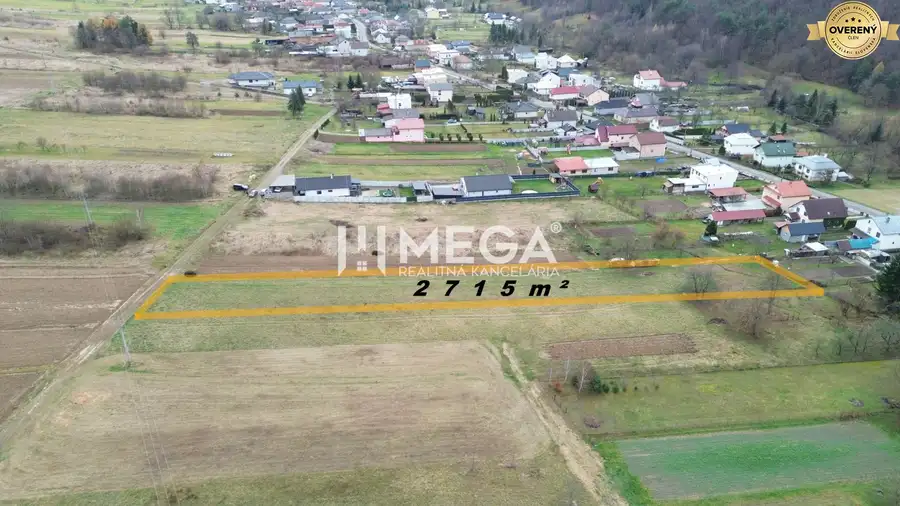
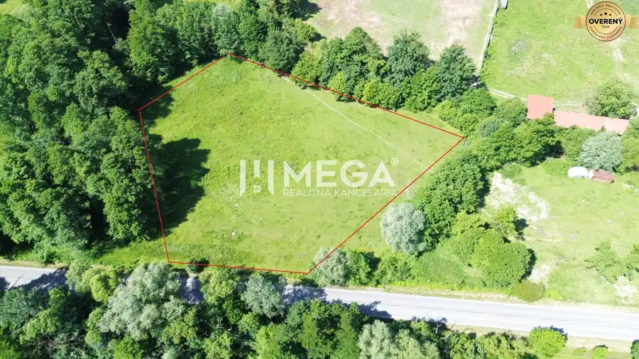
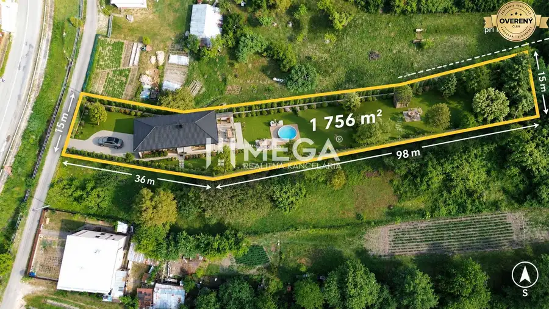
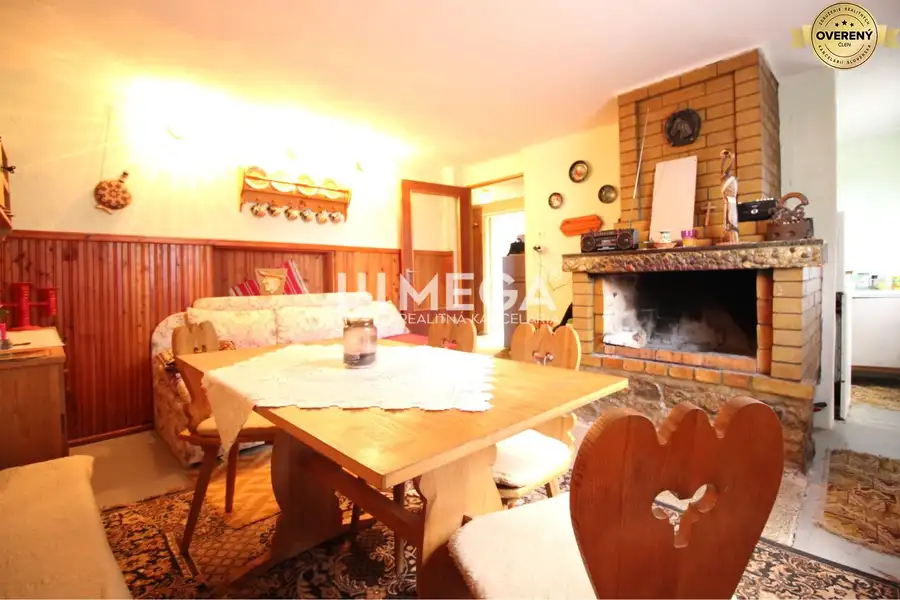
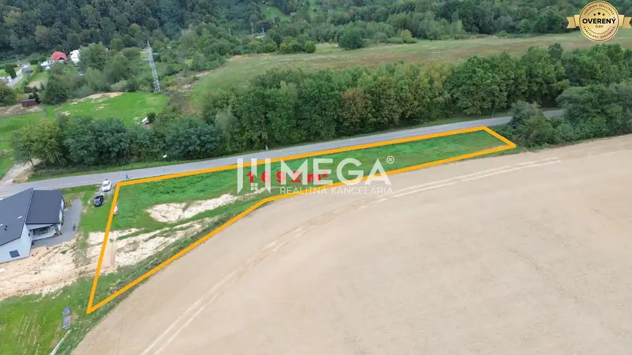
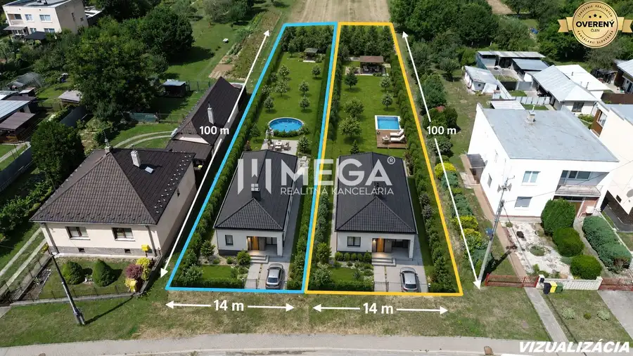
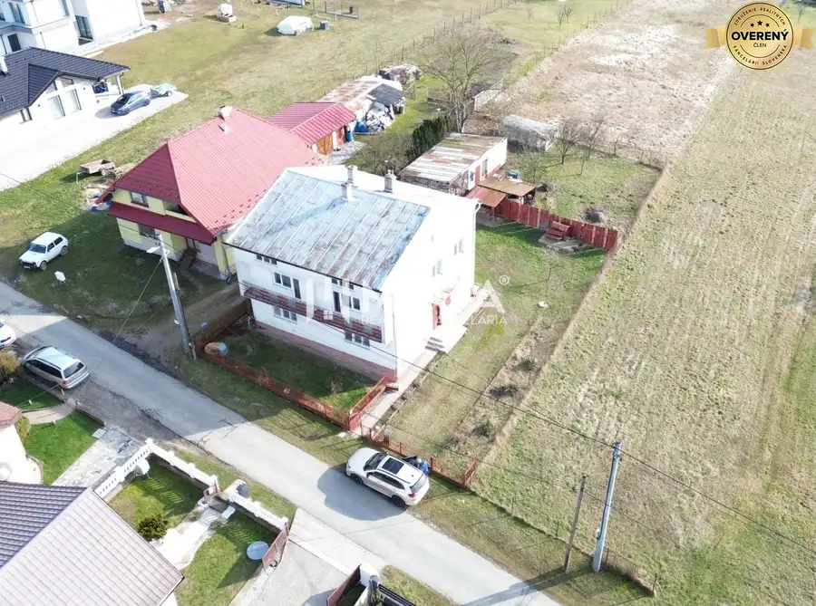
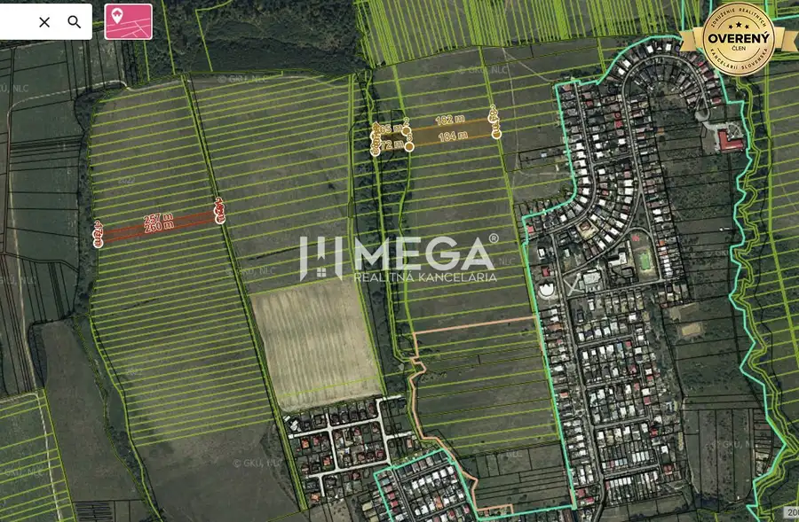

Aktuálna ponuka
22 nehnuteľností, predovšetkým pozemky, byty, rodinné domy. Každá má vlastnú stránku s fotkami, popisom a mapou.
Prezrieť ponuku
Tomáš MattaRealitný maklér
Realitný maklér · Mega realitná kancelária s. r. o.
Predaj a prenájom nehnuteľností · Humenné, Vyšný Kazimír, Ptičie


 Pozemok8
26 900 €Na predaj pozemok v srdci prírody - Vyšný Kazimír 1166 m²
Vyšný Kazimír
1166 m²
MEGA realitná kancelária Vám ponúka NA PREDAJ stavebný pozemok o výmere 1166 m², nachádzajúci sa v intraviláne na začiatku obce Vyšný Kazimír,…
Pozemok8
27 480 €Na predaj pozemok v lone prírody - Vyšný Kazimír 1196 m²
Vyšný Kazimír
1196 m²
MEGA realitná kancelária Vám ponúka NA PREDAJ stavebný pozemok o výmere 1196 m², nachádzajúci sa v intraviláne na začiatku obce Vyšný Kazimír,…
Pozemok10
37 000 €Super zľava predaj pozemku v obci Ptičie - iba 7km od mesta
Ptičie
2467 m²
MEGA realitná kancelária Vám EXKLUZÍVNE ponúka na predaj priestranný stavebný INVESTIČNÝ pozemok o rozlohe 2 467 m² v intraviláne vyhľadávanej obce…
Pozemok8
26 900 €Na predaj pozemok v srdci prírody - Vyšný Kazimír 1166 m²
Vyšný Kazimír
1166 m²
MEGA realitná kancelária Vám ponúka NA PREDAJ stavebný pozemok o výmere 1166 m², nachádzajúci sa v intraviláne na začiatku obce Vyšný Kazimír,…
Pozemok8
27 480 €Na predaj pozemok v lone prírody - Vyšný Kazimír 1196 m²
Vyšný Kazimír
1196 m²
MEGA realitná kancelária Vám ponúka NA PREDAJ stavebný pozemok o výmere 1196 m², nachádzajúci sa v intraviláne na začiatku obce Vyšný Kazimír,…
Pozemok10
37 000 €Super zľava predaj pozemku v obci Ptičie - iba 7km od mesta
Ptičie
2467 m²
MEGA realitná kancelária Vám EXKLUZÍVNE ponúka na predaj priestranný stavebný INVESTIČNÝ pozemok o rozlohe 2 467 m² v intraviláne vyhľadávanej obce…

Pozemok8 221 760 €Na predaj pozemky na mieru už od 1000 m² - obec Ptičie Ptičie 7392 m² MEGA realitná kancelária Vám v EXKLUZÍVNOM zastúpení klienta ponúka jedinečnú príležitosť získať investičný pozemok snov v intraviláne obce…
Pozemok10 24 990 €Aktualizovaná cena na predaj stavebný pozemok - Turcovce Turcovce 1756 m² MEGA realitná kancelária Vám EXKLUZÍVNE ponúka NA PREDAJ priestranný stavebný pozemok nachádzajúci sa v intraviláne obce Turcovce, len 16 km od…
Chaty a chalupy10 94 900 €Na predaj atraktívna murovaná chata na domaši - časť monika Holčíkovce 139 m² MEGA realitná kancelária ponúka EXKLUZÍVNE NA PREDAJ priestrannú 2. PODLAŽNÚ murovanú chatu vo vyhľadávanej rekreačnej oblasti DOMAŠA - časť MONIKA,…
Pozemok10 46 990 €Na predaj investičný pozemok s panoramatickým výhľadom Snina Snina 1692 m² MEGA realitná kancelária v exkluzívnom zastúpení MEGA Realitnej kancelárie ponúkame na predaj priestranný INVESTIČNÝ pozemok o rozlohe 1 692 m² vo…
Pozemok10 73 000 €Nová cena na predaj dva samostatné stavebné pozemky Jasenov Jasenov 1400 m² MEGA realitná kancelária ponúka so súhlasom majiteľa NA PREDAJ DVA SAMOSTATNÉ STAVEBNÉ POZEMKY v obľúbenej obci JASENOV, len 3 km od Humenného.… Záhrady3 25 000 €Na predaj - investíčné lesné pozemky v okolí mesta Humenné Humenné 37819 m² MEGA realitná kancelária ponúka NA PREDAJ spoluvlastnícky podiel na LESNÝCH POZEMKOCH s celkovou výmerou 37 819,088 m², nachádzajúcich sa v…Tomuto výberu zatiaľ nezodpovedá žiadna ponuka. Napíšte mi, čo hľadáte.
Volám sa Tomáš Matta. Som realitný maklér kancelárie Mega realitná kancelária s. r. o. a pôsobím predovšetkým v lokalitách Humenné, Vyšný Kazimír, Ptičie a Myslina (Prešovský kraj).

22 nehnuteľností, predovšetkým pozemky, byty, rodinné domy. Každá má vlastnú stránku s fotkami, popisom a mapou.
Prezrieť ponuku
Humenné, Vyšný Kazimír, Ptičie, Myslina, Turcovce a okolie. Ponuku si môžete prezrieť podľa lokality.
Nehnuteľnosti v lokalite
Odhad trhovej ceny, príprava prezentácie, obhliadky, zmluvy a odovzdanie nehnuteľnosti.
Dohodnúť stretnutieNa čo sa pýtate najčastejšie, skôr než sa stretneme.
Odhad trhovej ceny vychádza z aktuálnych ponúk a predajov v lokalite, nie z cenníkových tabuliek. Podmienky Vám poviem pri prvom telefonáte.
Najprv obhliadka a odhad ceny, potom príprava prezentácie (fotografie, popis, inzercia), obhliadky so záujemcami, rezervačná zmluva, kúpna zmluva, návrh na vklad do katastra a odovzdanie nehnuteľnosti. O každom kroku viete vopred.
Najrýchlejšie cez WhatsApp alebo telefón. Termín stretnutia alebo obhliadky dohodneme podľa Vás.